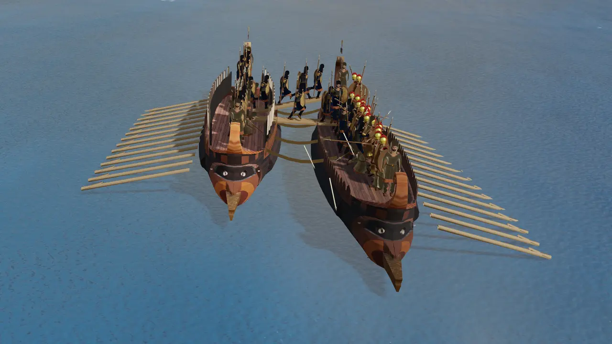
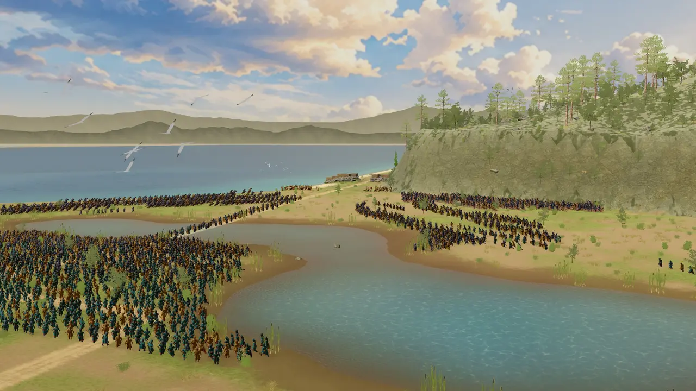
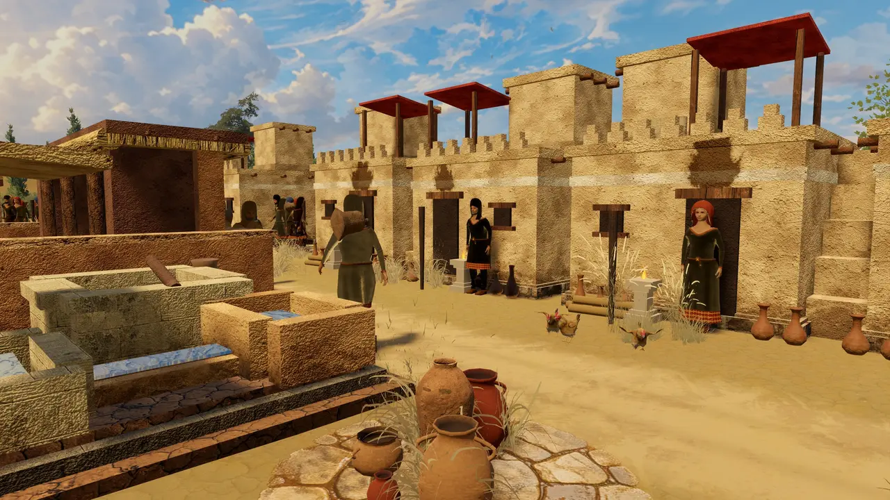
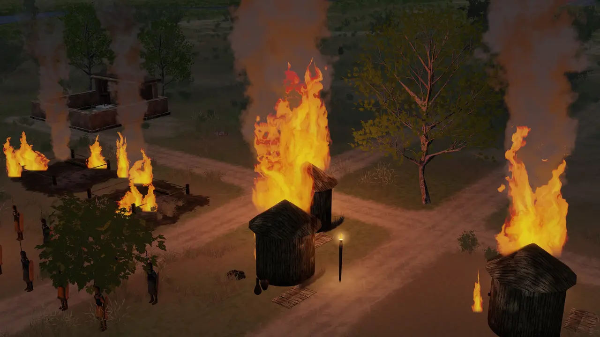
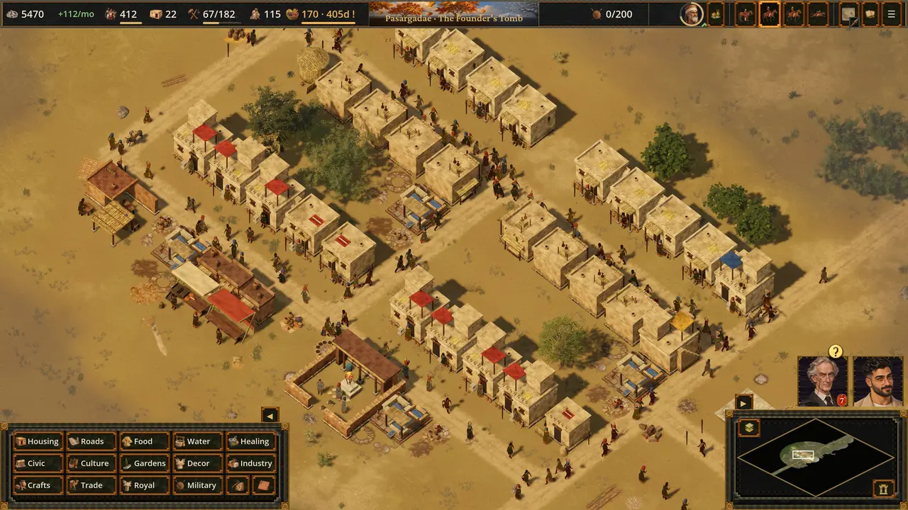
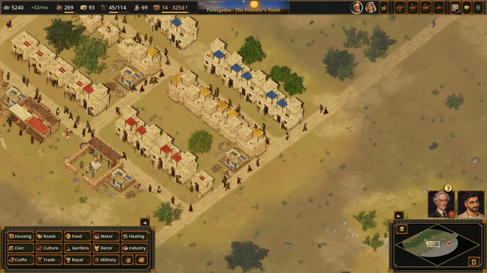
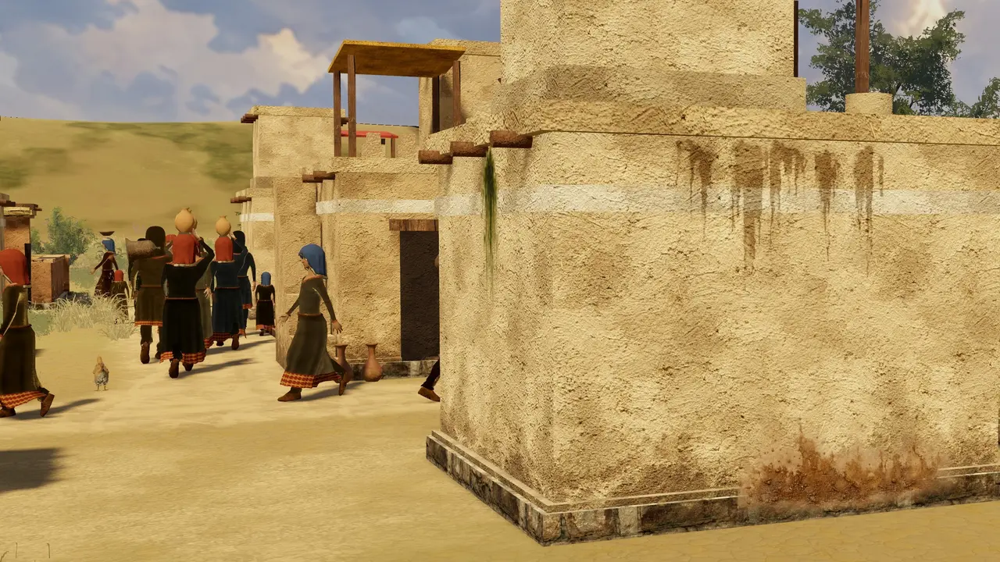

Screenshots
















A city builder of the Persian empire, 530 to 479 BCE
Build the cities of the Persian empire, march the King's armies to the great battles of 530 to 479 BCE, and learn the history as you play. A painted city builder from Cyrus's Pasargadae to the field of Plataea.
Early Access 0.5.0-ea.31 and the free demo 0.5.0-demo.24, 10 November 2026.
Lay out streets and houses, feed and water your people, and raise the great works part by part: the Tomb of Cyrus, the terrace at Persepolis, the palace at Susa. Every level builds with its own materials and dresses its own townsfolk.
Trade with real neighbours: Babylon and Media send tribute, Phoenicia and Naucratis send ships, and some cities have to be asked for earth and water first. Set the King's dues and keep the court's favour.
March the nations' contingents to each battle's own ground, with up to 20,000 men: Thermopylae with Artemisium, Plataea with Mycale, the sack of Athens. Command triremes at Lade, Artemisium and Salamis.
An illustrated Encyclopedia of 552 articles and 2,783 painted sections marks how we know each part: the record, an ancient account, disputed, or later legend.







Each level's history page tells what happened there and how we know it. The free demo is Level 1, Pasargadae; Early Access has every level built so far.
 레벨 1: 건국자의 무덤파사르가다에、기원전 530년 · free demo
레벨 1: 건국자의 무덤파사르가다에、기원전 530년 · free demo 레벨 2: 창 시종멤피스、기원전 525–524년
레벨 2: 창 시종멤피스、기원전 525–524년 레벨 3: 거짓바가스타나、기원전 521년
레벨 3: 거짓바가스타나、기원전 521년 레벨 4: 테라스파르사、기원전 521–509년
레벨 4: 테라스파르사、기원전 521–509년 레벨 5: 칙서수사、기원전 519–515년
레벨 5: 칙서수사、기원전 519–515년 레벨 6: 배다리이스트로스、기원전 513년
레벨 6: 배다리이스트로스、기원전 513년 레벨 7: 불타는 사르디스사르디스、기원전 499–494년
레벨 7: 불타는 사르디스사르디스、기원전 499–494년 레벨 8: 마라톤만마라톤、기원전 490년
레벨 8: 마라톤만마라톤、기원전 490년 레벨 9: 운하아토스、기원전 483–480년
레벨 9: 운하아토스、기원전 483–480년 레벨 10: 뜨거운 문테르모필레、기원전 480년
레벨 10: 뜨거운 문테르모필레、기원전 480년 레벨 11: 최종장플라타이아、기원전 480–479년
레벨 11: 최종장플라타이아、기원전 480–479년 에필로그: 미칼레미칼레와 헬레스폰토스、기원전 479년
에필로그: 미칼레미칼레와 헬레스폰토스、기원전 479년Every battle, building, soldier, ship, ruler, people, place and royal order the game names, each with its paintings and sources.
Scenes with the King, his court and his enemies are dramatizations based on Herodotus, the Behistun inscription and the other sources named in the game. Windows and Linux.